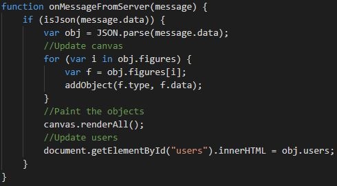

El proyecto consiste en el desarrollo de una aplicación de videochat utilizando WebRTC.
Esta aplicación consta de:
Servidor: encargado de gestionar las conexiones de los usuarios.
Cliente: permite a los usuarios conectarse al servidor y realizar el intercambio de vídeo y mensajes de chat con el resto de usuarios conectados al servidor (usando el nombre de dicho usuario).
Desarrollo
Para desarrollar tanto el cliente como el servidor se ha utilizado Visual Studio Code. Adicionalmente, se ha utilizado XAMPP
para desplegar a los clientes y Node.js para instalar y ejecutar el servidor.
Para instalar el servidor se ha creado la carpeta DrawingServer y desde la consola de Node.js se ha accedido a ella y se ha ejecutado el comando npm init.
Instalación del servidor con Node.js
Desarrollo del servidor
Tras instalar el servidor en Node.js, se han instalado, con el comando npm install NOMBRE_PAQUETE, dos paquetes:
ws: biblioteca de WebSockets para proporcionar un canal de comunicación bidireccional entre cliente y servidor.
express: framework web para Node.js.
A continuación, se ha creado el fichero server.js dentro de la carpeta WebRTCServer.
Este fichero contiene la implementación del servidor, es decir, las variables y funciones necesarias para que éste realice su funcionalidad.
Desarrollo del cliente
Para desarrollar el cliente se ha utilizado HTML, CSS y Javascript. Por tanto, el proyecto está formado por tres ficheros:
Index.html: fichero HTML que representa la vista del cliente (botones, vídeos y chat).
Style.css: fichero CSS que contiene los estilos que se aplican a los elementos del fichero HTML.
Script.js: fichero Javascript donde se encuentra la implementación (lógica) del cliente, es decir, las funciones necesarias para
comunicarse con el servidor, intercambiar mensajes con otros usuarios, etc.
A continuación, se explican las funciones más importantes del fichero script.js.
El servidor WebSocket cuenta con varias funciones que se ejecutan en función del tipo de evento que se produza.
El evento connection se produce cuando se establece la conexión entre el cliente y el servidor.
El evento message se produce cuando el servidor recibe un mensaje del cliente a través de la conexión establecida.
En función del tipo de mensaje se producen distintas acciones.

Cliente - Función onMessageFromServer
Ejecución
Para poder ejecutar la aplicación es necesario arrancar el servidor y ejecutar dos clientes.
Por un lado, para arrancar el servidor, se debe ejecutar la consola de Node.js y acceder a la ruta del servidor. Una vez ahí, se debe ejecutar el comando node server.js.
Por otro lado, para ejecutar el cliente, se debe introducir éste en la carpeta htdocs de XAMPP.
Seguidamente, se debe arrancar el servicio Apache de XAMPP.
A continuación, se deben abrir en el navegador Chrome dos instancias del cliente. Para ello se debe ejecutar localhost/NOMBRE_CLIENTE, donde NOMBRE_CLIENTE es el nombre de la carpeta
donde se encuentran los archivos del cliente (carpeta dentro de htdocs).
Despliegue
El código de esta aplicación se puede encontrar en el GitHub de la autora, así como el código
del servidor y del cliente.
Adicionalmente, se ha creado una presentación (resumen de esta entrada del blog) con el framework Reveal.js cuyo
código se puede encontrar en este enlace.